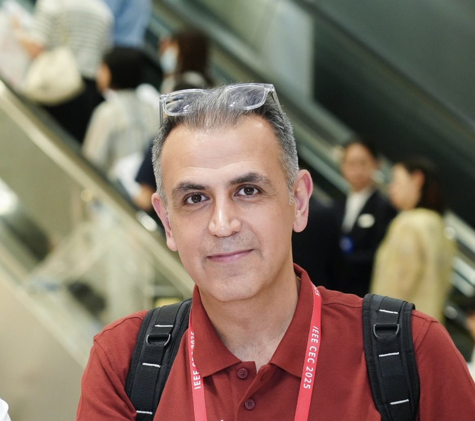

Accreditation to Supervise Research (HDR)
About

Mahmoud Golabi is a tenured researcher and lecturer at Université de Haute-Alsace, France. He began his academic career with a Ph.D. from Eastern Mediterranean University, Cyprus, on evolutionary approaches for complex logistics problems, and subsequently served as an Assistant Professor in Cyprus after graduating in 2017. In 2019, he joined UHA as a Postdoctoral Researcher and was later appointed as a permanent researcher and lecturer. In July 2025, he defended his Habilitation à Diriger des Recherches (HDR), titled “From Classical to Learning-Enhanced Optimization: Advancing Logistics and Interactive Multi-Objective Search.” His main research interests lie in the integration of exact methods, optimization algorithms, and machine learning techniques to address large-scale and complex real-world problems, with applications in logistics, chemistry, and materials science. In addition, he explores advanced paradigms in evolutionary multi-objective optimization and quantum-inspired optimization. He teaches undergraduate and graduate courses at Université de Haute-Alsace, and his work has been published in leading international journals and conferences in optimization and machine learning.
Education
Ph.D. in Industrial Engineering (Focused on Optimization)
M.Sc. in Operations Management
B.Sc. in Industrial Engineering
Work Experience
June, 2021 – ongoing
Permanent Researcher (AI & Optimization) & Lecturer
Senior Research Fellow in Optimization
Post-doc Fellow in Optimization
Assistant Professor of Industrial Engineering
Lecturer and Head of Research Assistants
Lecturer
Consultant (Project Management, Investment Appraisal)
Production Engineer (Production Planning)
Funded Research Projects
GEN-Q Evacuation
GEN-Q HealthCare
GreenFOAM
PRIORITERRES
L4V
TruckLoading
ZEO-OPT
AI-LPWAN
Publications
International Journals
International Conferences
National French Conferences
Contact
📧 mahmoud.golabi@uha.fr
🏛️ IRIMAS — Université de Haute-Alsace
12 rue des Frères Lumière
68093 MULHOUSE Cedex, FRANCE